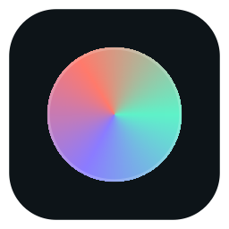

MediaGrabberMediaGrabber is a free Mac app that turns a link into a video or an audio file. Paste it, pick a format, press Grab.
Free. Apple Silicon. macOS 14 or later.
Everything it needs is built in. Nothing else to install.
Copy a link, paste it in. MediaGrabber finds the title and what is available.
Video or audio, the quality you want, and the folder it goes to. All pre-filled.
Watch it download. When it says Saved, reveal the file in Finder.
Queue as many as you like. Pause, resume or cancel each one on its own.
Paste a playlist and choose which videos to keep. They download as one tidy group.
Save as M4A or MP3 instead of video.
Downloads work without an account. If a video is age-restricted or private, MediaGrabber can use the sign-in from a browser you choose.
Your list, history and logs stay on your Mac.
MediaGrabber talks to the site you download from, and checks GitHub for updates. You can turn the update check off.
1. Open the downloaded disk image.
2. Drag MediaGrabber onto Applications.
3. Open it from Applications.
MediaGrabber is free, and Apple hasn't reviewed it. So the first time you open it, your Mac will say it can't check the app. That's expected, and you only do this once.
1. When your Mac says it can't open it, close the message.
2. Go to System Settings, Privacy & Security, scroll to Security and click Open Anyway.
3. Confirm with your password or Touch ID, then choose Open.
Yes. MediaGrabber is free, and the code is public.
It checks about once a day and asks before installing anything. You can turn that off in Preferences.
Preferences, Advanced, Uninstall. Videos you already downloaded stay where they are.
Preferences, Diagnostics, Share diagnostic bundle sends a report through the Mac share sheet.